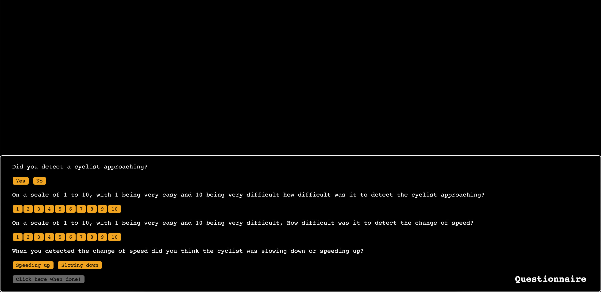

Thank you for participating. Please note this experiment will only work using GOOGLE CHROME. The experiment will take approximately 1 hour to complete, you may take short breaks in between (no more than 10 minutes) if you wish. During the experiment you will be shown 72 randomly ordered animations; the first two will be practice rounds followed by the experiment. In each video a cyclist will appear, cycle up the road, and at some point change speed. Once you are confident you have seen the bicycle, you should immediately click the detection button, once you are confident you have seen the bicycle change speed, you should immediately click the change speed button. Following each round you will rate the difficulty of the task in a short questionnaire. Afterwards. when all videos have been shown, you will be able to download a results file which you will then need to send to the researcher either on arjunjmistry@hotmail.com or via social messenger. Press continue to see an instructional walkthrough.
Instructions
click LOAD to load first video (this may take a couple of seconds to load)
click START to play the video and begin the experiment
click DETECT BIKE as soon as you are confident that you have detected a bicycle. NOTE that in some animations no bicycle will appear, in which case click NO BICYCLE.
click DETECT CHANGE IN SPEED as soon as you confidently detect that the bicycle has either slowed down or sped up. If you do not detect a change in speed, click the button once the video has ended.
click DONE once the video has ended

complete the questionnaire. click NO if no bicycle was present in the video.
CLICK HERE WHEN DONE to begin the next animation. There are 72 animations in total, the first 2 will be practice rounds.
once all videos have been completed click DOWNLOAD REPORT and send the downloaded excel file to the researcher
Videos make take a few seconds to load
Result
Questionnaire
Did you detect a cyclist approaching?
On a scale of 1 to 10, with 1 being very easy and 10 being very difficult how difficult was it to detect the cyclist approaching?
On a scale of 1 to 10, with 1 being very easy and 10 being very difficult, How difficult was it to detect the change of speed?
When you detected the change of speed did you think the cyclist was slowing down or speeding up?